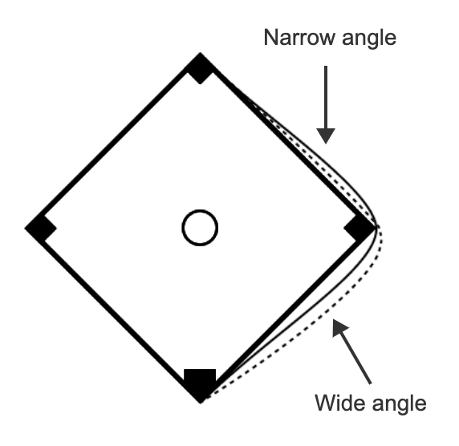

8-1 : Paired designs
MAT 2100: Introduction to Statistics
Grace College
Last updated September 24, 2024
The Jesus Creed
Hear, O Israel: The Lord our God, the Lord is one.
Love the Lord your God with all your heart and with all
your soul and with all your mind and with all your strength.
The second is this: Love your neighbor as yourself.
Rounding first base
Imagine you are at the plate in baseball and have hit a hard line drive. You want to try to stretch your hit from a single to a double. Does the path that you take to “round” first base make much of a difference? For example (see the figure below), is it better to take a "narrow angle" or a "wide angle" around first base? (This exploration is based on an actual study reported in a master’s thesis by W. F. Woodward in 1970.)
Figure 1:

Think about designing a study to investigate this question.
Exercise 1
Identify the explanatory and response variables in this study.
Exercise 2
How would you design an observational study to investigate this question? Explain why an observational study would not allow you to decide which base-running angle is better than the other.
Exercise 3
Suppose 20 baseball players volunteered to participate in an experiment. Suppose that you also plan to assign a single angle, either wide or narrow, to each player. How would you decide which player ran with which base-running angle?
A reasonable experimental design would be to randomly assign 10 of the 20 players to run with the wide angle and the other 10 to run with the narrow angle.
Exercise 4
Some runners are faster than others. Explain how random assignment controls for this, so that speed is not likely to be a confounding variable in this study.
Even though random assignment tends to balance out other variables (such as speed) between the two groups, there’s still a chance that most of the fast runners could be in one group and most of the slow runners in the other group. More importantly, there’s likely to be a good bit of variability in the runners’ speeds, and that variability would make it harder to spot a difference between the base-running angles even if one angle really is superior to the other.
Exercise 5
Suggest a different way of conducting the experiment to make sure that speed is completely balanced between the two groups.
Definition 2:
Definition ():
For a paired design, response values come in pairs, with one response value in the pair for Group 1 and the other for Group 2. Sometimes the pairs come from matching individuals to create groups of two (we call this paired design using matching); sometimes the pairs come from measuring the same individual twice, once under each condition (we call this paired design using repeated measures). For an independent groups design, each individual in a group is unrelated to all the other individuals in the study. Each individual provides only one response value.
In this study each runner can use both base-running angles. That way we can be sure that neither treatment has more of the fast or slow runners, and we can also expect that differences in times for each runner will show considerably less variability than individual running times.
Exercise 6
What aspect of this experiment should be determined randomly? (Hint: The treatment is not determined randomly, because each runner experiences both treatments. But what other factor could still have an effect on the response unless it was randomized?)
Exercise 7
What do you suggest using as the variable to be analyzed with this paired-design experiment? (Hint: Think of a better option than simply analyzing the set of times with the wide angle and the set of times with the narrow angle separately the way you would for an independent groups design of the sort described in #3 and #4.)
With a paired design, we analyze the differences in the response between the two treatments. In this case we would calculate the difference in running times between the wide and narrow angles for each player and then analyze the sample of differences. You will learn how to do this in future sections.
The order in which the players run with the two angles should be determined randomly; otherwise, the order could be a confounding variable. Perhaps players would be slower with their second angle because of fatigue or perhaps they would be faster with their second angle if they were slow to get warmed up. Randomizing the order takes away any worries about an order effect.
So far you have seen three designs for this study. The first ( [REF=TODO] ) was observational. The second ( [REF=TODO] and [REF=TODO] ) was a randomized experiment with independent groups. The third ( [REF=TODO] and [REF=TODO] ) used a paired design with pairs created by repeated measures.
Exploring Further
Exercise 8
Consider a fourth design: Suppose you have 20 players, as before, and you have the time for each player in a 100-yard dash. Explain how you could use this information to create pairs of runners that you expect to be similar and how you would assign one runner in each pair to the narrow angle and the other to a wide angle.
Exercise 9
Of the four designs (observational with independent groups, experimental with independent groups, paired design using repeated measures, and paired design using matching), which do you think is best for this context? Explain why. (Hint: Pairing works best when the units in a pair are as similar to each other as possible.)
Exercise 10
As noted in [REF=TODO] , pairing works best when the two units in a pair are as similar as possible. When the units in a pair are not similar, pairing will not be effective. Invent and describe an example where you think pairing will be effective. Give the response and explanatory variable, how you would create the pairs, and why you think pairing will be effective.
Exercise 11
Invent and describe an example where you think pairing will not be effective. Again, give the response and explanatory variable, how you would create the pairs, and this time why you think pairing will not be effective.
Exercise 12
For some contexts, the strategy of using repeated measures to create pairs is either impossible or a bad idea. Invent and describe such a context.
Exercise 13
Pairing can also be used in the design of an observational study. Revisit the observational study in #2, and suppose also that you have times in the hundred yard dash for each of the 20 players. Explain how you could use those times to create pairs. (Suppose that, of the 20 players, 12 used the wide angle and only 8 used the narrow angle. This means you can create only 8 pairs.)